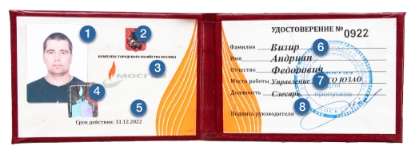

ПРОВЕРКИ ГАЗА
Зачем это нужно и как не
впустить в дом мошенника
С 3 июля в Москве возобновились плановые проверки домового и квартирного газового оборудования, которые были приостановлены на время пандемии коронавируса. Обновленный график визитов сотрудников «Мосгаза» уже размещен на официальном сайте организации в разделе «Населению».
Все проверки проводятся с учетом новых реалий. Специалисты, контактирующие с населением, обеспечены медицинскими масками, перчатками и дезинфицирующими средствами, а также проходят ежедневный мониторинг состояния здоровья. В офисах «Мосгаза» регулярно проводят уборку и обеззараживают воздух.
Зачем нужны проверки?
К сожалению, далеко не все люди ответственно подходят к вопросу технического обслуживания газового оборудования. Недооценивать важность проверок нельзя ни в коем случае, ведь на кону может стоять судьба жителей всего дома. Подобные мероприятия необходимы для профилактики происшествий с газом и пожарами. К сожалению, далеко не все люди ответственно подходят к вопросу технического обслуживания газового оборудования. Недооценивать важность проверок нельзя ни в коем случае, ведь на кону может стоять судьба жителей всего дома. Подобные мероприятия необходимы для профилактики происшествий с газом и пожарами.
Сотрудники «Мосгаза» в ходе своего визита проверяют газопровод и газовое оборудование высокочувствительным прибором (индикатором-течеискателем горючих газов) на наличие утечек газа. Также газифицированное помещение обследуется на соответствие нормам и правилам эксплуатации газового оборудования.
Специалисты проверяют работоспособность всех узлов и элементов автоматики безопасности газовых приборов, а при необходимости смажут краны, прочистят сопла и отрегулируют горение газа. Большое внимание уделяется вентиляционным и дымоходным каналам — в них замеряется наличие тяги.
При выполнении обслуживания газового оборудования сотрудниками «Мосгаза» соблюдаются все меры безопасности. Они ежегодно проходят обучение и аттестацию по правилам производства газоопасных работ.
Берегитесь мошенников
В период газовых проверок всегда учащаются случаи мошенничества, связанные с визитом к москвичам лжегазовиков. Чтобы ненароком не впустить в квартиру злоумышленника, нужно знать несколько несложных правил.
01
Так, о проведении планового и внепланового техобслуживания «Мосгаз» оповещает заранее. На сайте публикуется график проверок, на домах вывешиваются объявления, проводится личный обзвон жильцов.
03
Кроме того, сотрудники «Мосгаза» никогда не ходят на проверки вдвоем и не оказывают дополнительных платных услуг.
02
Сотрудники «Мосгаза» всегда одеты в спецодежду темно-синего цвета со светоотражающими полосками.На спине есть оранжевая кокетка с надписью «МОСГАЗ» и фирменным логотипом.
04
Специалист обязан предъявить удостоверение установленного образца.
2 Герб москвы
3 Фирменный логотип АО "МОСГАЗ"
4 Фирменная голограмма
6 Номер сотрудника, его фамилия, имя и отчество.
7 Название управления и должность сотрудника
8 Печать АО "МОСГАЗ"
05
Если у вас есть подозрение, что перед вами мошенник, если на вас оказывают психологическое давление, торопят с принятием решения и настойчиво предлагают приобрести оборудование или услугу, звоните по телефонам: 104 или 112 (добавочный 04).
Полезные номера
По всем вопросам, касающимся ремонта, эксплуатации и замены газового оборудования, можно обратиться в службу сервиса АО «Мосгаз» по телефону:
Также на сайте организации размещены номера телефонов районных служб внутридомового газового оборудования (ВДГО).
При появлении запаха газа в помещении или на улице, при возникновении аварийной ситуации на газовом оборудовании или газопроводах нужно незамедлительно звонить в аварийную диспетчерскую «Мосгаза» по номерам: 104 (с городских телефонов, МТС и «Билайн», TELE2), 040 («Мегафон», Yota), 904 (Skylink) или сразу в Единую службу спасения по номеру 112.
Диспетчер примет аварийную заявку, зарегистрирует ее, даст квалифицированный инструктаж о мерах, которые необходимо принять абоненту до прибытия аварийной бригады.